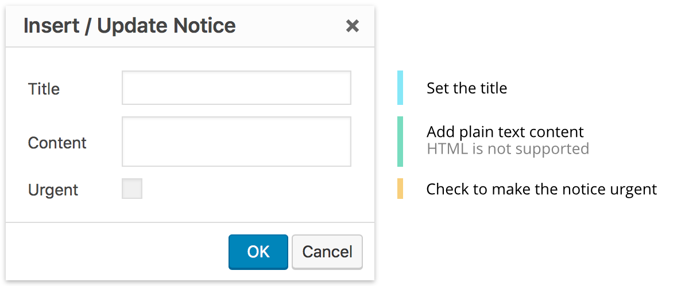

To display a more critial notice, add the class urgent
Critical Deadline
The deadline for submissions is tomorrow, after that you're doomed! Submit now
Notices are full-width banners that display a short amount of temporary, time-sensitive content.
Notices are implemented with the class cl-notice
There's something going on next week you should know about.
To display a more critial notice, add the class urgent
The deadline for submissions is tomorrow, after that you're doomed! Submit now
Notices can be implemented with the shortcode cl-notice
[cl-notice title="Alert"]The notice content.[/cl-notice]
title (string) (optional)
The title of the notice
urgent (bool) (optional)
Set to style the notice as urgent
(default value: false)
With the WYSIWYG plugin installed, notices can be added using the WYSIWYG editor.
The icon to add a notice appears in the WYSIWYG toolbar. Clicking this icon opens a dialogue where different notice attributes can be easily set.
The completed notice will appear fully styled in the editor window. To edit it, simply double-click the notice to reopen the editor dialogue.